Sethi-Ullman numbering is a technique for scheduling the evaluation of expression trees for minimum register usage. We all learned it in our first optimizer class 'cause it's so simple and clean. However, it's not really adequate for an optimizing compiler. Classical SU-numbering assumes all the values (the leaves of the expression tree) are in memory locations. While it's possible to simply assert that the leaves may be in registers, the traditional formulation misses an important opportunity, namely the chance to reuse registers after they've gone dead.
Let's consider this example from the paper:
a/(b + c) - d*(e + f)The expression tree for this expression looks like
Assigning classical SU numbers to this tree yields
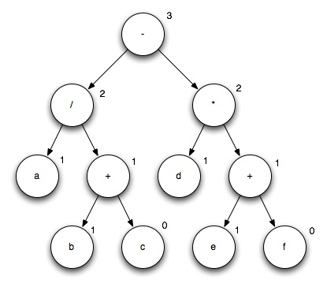
Here we're assuming that a through f
are all values in registers that must be preserved and that the machine
has 2-address instructions rather like the x86. The numbers associated
with each node indicate the number of additional registers required to
evaluate the associated subtree. In this case, we can evaluate the
entire tree with 3 temporary registers, emitting code like this
r0 = ra r1 = rb r1 += rc r0 /= r1 r1 = rd r2 = re r2 += rf r1 *= r2 r0 -= r1While other code sequences are feasible, none are cheaper, in terms of instructions or registers.
Note that we had to make copies of many of the source registers; since they must all be preserved, we need to be careful to avoid overwriting them. We number the tree during a depth-first walk according to the following rules
Let's reconsider our example tree, but with a few modifications.
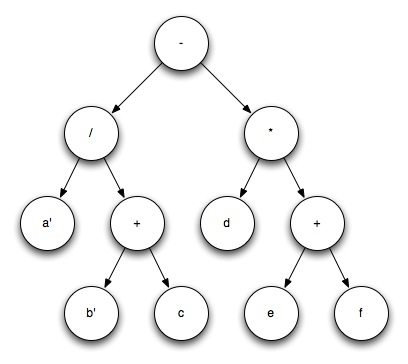
Here I've introduced a new bit of notation, an apostrophe after a
register name to indicate that the register need not be preserved; in
other words, this expression is the last use of a and b. After this expression, they will be dead in a data-flow sense.
Since we're allowed to overwrite some registers, we can achieve a shorter schedule, using fewer temporaries. For instance, we might evaluate the entire tree like this
rb += rc ra /= rb r0 = rd rb = re rb += rf r0 *= rb ra -= r0So, the problem is: Given an expression tree with leaf values in registers, where some of the registers must be preserved and others may be overwritten, find an order of evaluation that minimizes the number of extra registers required.
We're going to be a bit less abstract than Sethi and Ullman, so I'd like to start afresh and define a some useful names. We'll be manipulating expression trees. Nodes in the trees will have one or two children. If a node has two children, we'll distinguish between the left and right child.
We'll further distinguish certain nodes as r-nodes (where the r might stand for right or restricted). These nodes
Other nodes (including register references that may be overwritten) may appear as either the left or right child of another node without penalty.
While I'm not completely sure of this result, my approach for now is as as follows...
We'll compute two non-negative integers at each node, a pair: the number of extra registers required, extra, and the number last uses, freed. The extra value corresponds to the traditional SU-number, though it won't always have the same value. We can call them SU-pairs and they'll have the form (extra, freed). Our example tree would be labeled like this
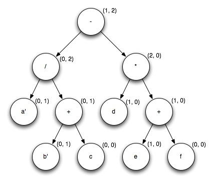
In this case, I've labeled the tree by inspection. We want an algorithm to achieve the same result.
We number leaves as follows:
(0,0)
(0,0)
(0,1)
Before we can determine the SU-pair for a unary operation, we must examine its child. If it's an r-node with the SU-pair (0,0),
we adjust it to (1,0). After any necessary adjustment, the SU-pair for a unary operation equals the SU-pair of its operand.
Before we can determine the SU-pair for a binary operation, we must examine its left child.
If it's an r-node with the SU-pair (0,0), we adjust it to (1,0).
Next, we need to choose which subtree (the left or right)
to evaluate first, then compute the associated SU-pair. To find this,
we consider the cost of the entire tree assuming the left subtree is
evaluated first versus the cost of evaluating the entire tree if the
right subtree is evaluated first.
cost.left = left.extra + left.freed > right.extra ? left.extra : right.extra - left.freed + 1 cost.right = right.extra + right.freed > left.extra ? right.extra : left.extra - right.freed + 1The result's SU-pair will equal
(min(cost.left, cost.right), left.freed + right.freed).
A challenge is to simplify the computation of costs. Another challenge is to prove that it's correct!
Consider the computation of const.left. There are two cases:
left.extra if left.extra + left.freed - 1 >= right.extra
right.extra - (left.extra + left.free - 1) + left.extrawhich simplifies to
right.extra - left.freed + 1
A way to start the proof of correctness is to compare with ordinary SU numbering for examples where it applies (i.e., none of the input registers are freed).
For operations that are commutative but not associative (such as floating-point addition or multiplications), it's sometimes worthwhile to interchange the operands. Consider the example above. If we notice that the left child of the multiply operation is an r-node, we can interchange the left and right children and achieve a better result
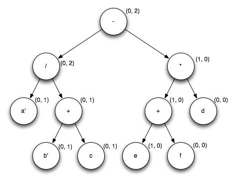
which yields the following code
rb += rc ra /= rb rb = re rb += rf rb *= rd ra -= rbGenerally, if we have a commutative operation where the left child is an r-node and the right child is not, we should interchange the children, then compute the SU-pair in the same way as other binary operations.
While I know of operations that are associative but not commutative (matrix multiplication and quaternion multiplication), few machines have such things. Though the Tera MTA does have a bitwise matrix-multiplication instruction. Perhaps I should think about this problem in the future.
Suppose we're given a more interesting tree, like this
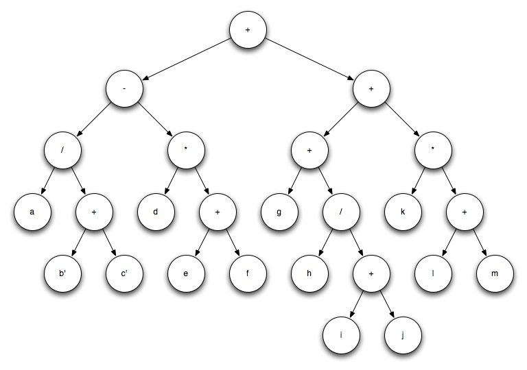
It's useful to note and take advantage of operations that are associative and commutative (e.g., integer multiplication and addition). In this case, we can note the 4 subexpressions that are summed and rewrite the tree, temporarily, with a special operator for easier manipulation.
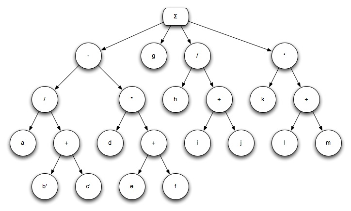
I will call this form an associative tree. That is, we start with a binary tree and rewrite it as an associative tree. Later, we'll rewrite it again as a binary tree.
Since we're going to focus on the sum, I'll abstract away the details, like this
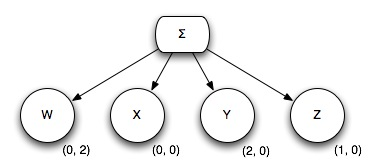
The opportunity here is that we might implement the summation in any one of a number of ways, with different register requirements. My solution (I hope it's a solution) proceeds in two steps:
extra (ascending), resolving ties by freed (descending). In our example, we'd get
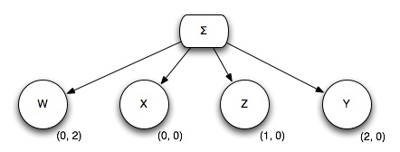
Next, we do placement. The key here is that we've sorted so that the subexpression with the greatest need for extra registers (Y), is on the right. We look at all the subexpressions to its left (W, X, and Z). If none of them free any registers, we'll move our right-most subexpression to the left end, where it will be evaluated first. On the other hand, if some registers are freed during the evaluation of the other subexpressions, then we'll leave the rightmost expression in place, where the maximum number of registers will be available for its evaluation. In this second case, we need to recursively consider the placement of the rest of the subexpressions.
In our example, since the evaluation of W will free some registers, consideration of Y, Z, and X leaves each in place and the summation would be implemented like this
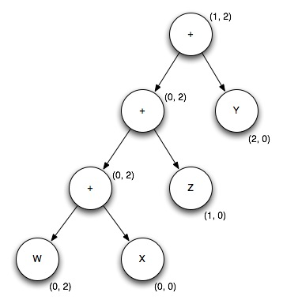
Here are a few more exampes to help illustrate the placement step. In each case, I'll show the associative tree after sorting and after placement.
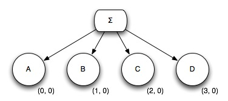
We consider the right-most subtree, D. Looking at all the subtrees to its left, we see that none free any registers, so we move D to the left-most position where it will be evaluated first and we're done.
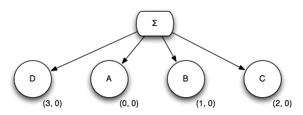
We consider the right-most subtree, H. Looking at all the subtree to its left, we see that they free some registers, so we leave it in place.
Next, we consider G. Looking at all the subtrees to its left, we see that none free any registers, so we move G to the left-most position where it will be evaluated first and we're done.
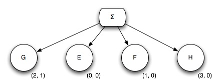
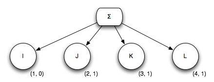
We consider the right-most subtree, L. Looking at all the subtree to its left, we see that they free some registers, so we leave it in place.
Next, we consider the right-most subtree, K. Looking at all the subtree to its left, we see that they free some registers, so we leave it in place.
Finally, we consider J. Looking at all the subtrees to its left, we see that none free any registers, so we move J to the left-most position where it will be evaluated first and we're done. Note that it's unimportant that J freed some registers.

While subtraction is not commutative or associative, it sometimes presents opportunities. If we rewrite subtraction operations as addition and negation (where negate will be an r-node), then we can perhaps reassociate. Furthermore, we can collapse pairs of negates.
The opportunity to collapse pairs of negates makes this worth doing for floating-point computation.
What about division?
This approach doesn't give an optimal scheduling, at least in terms of register usage. Here's an example (thanks to Mark) where any contiguous evaluation is not optimal.
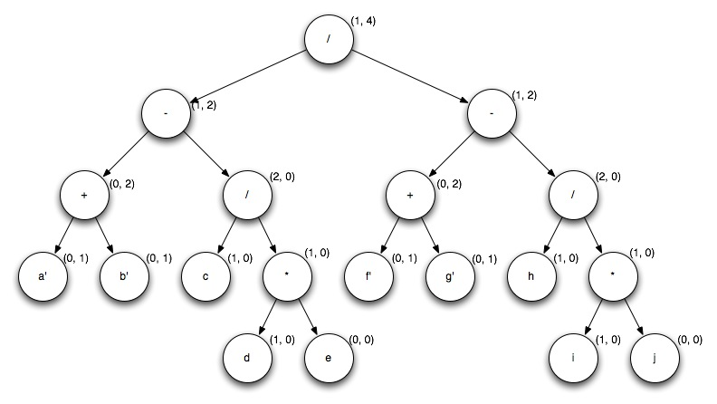
My approach to this tree would require 1 extra register for evaluation; better than Sethi-Ullman but not perfect.
Mark pointed out that it's better to evaluate a + b and f + g first, since each will free a register.
Given a spare free register, we can evaluate the rest of the expression in any convenient order, with no additional registers.
I'm not entirely sure what to do here. Complex addressing modes allow more to be done with fewer registers, so my scheme will tend to overestimate register requirements and will, as a result, get some of the ordering incorrect. This may not be important.
A very complex expression tree will require more registers than we've got. This scheme doesn't account for that possibility. Given 16 integer registers and 16 floating-point registers, I don't think it'll be a problem very often, but it would be smart to have a fallback position.
Prove that this is the best way to handle operations that are associative and commutative.
Is there a simpler approach to achieve the same effect?
Can we describe, precisely, the effect we're trying to achieve?
What about a value that appears in, for example, two leaves and then goes dead?
Can we express this approach in a BURG grammar, so that it's handled at the same time as instruction selection?
ideas about using burg (iburg really) to run after extended SU numbering to do a more precise job. Still need SU numbering to do the reassociation. Here's my email note
Recall that I've been talking about SU numbering. One of the open questions wondered about what's lost by doing SU-numbering before running BURG. That is, we recognized that there would be some imprecision caused by running BURG late, since the SU numbering would be slightly off on it's register requirements.
The latest idea recognizes that it's possible to do some parts of SU numbering during the label pass of BURG. Thinking about it, I think I need to run the extended SU numbering first, 'cause I want to be able to reassociate where it helps. But then, during the label pass, pay attention to register usage and my extended cost accounting for dead registers, and choose the correct ordering for subtree evaluation. It might be the same as the order picked during the initial SU numbering, but it might be improved due to refined info about actual register requirements.
The cool part is that it's very easy to express using BURG (well, almost easy). Imagine the grammar rule
reg : ADD(reg, reg)
So here's a simple rule saying that the non-terminal reg can be defined by an ADD of two other regs. To do SU numbering at the same time, we just provide two rules that look identical, but may have different costs, where one evaluated the left subtree first and the other evaluates the right subtree first.
It's not actually easy because the BURG input language doesn't allow us to express this. Perhaps we could fix it using some combination of hacking on iburg and plug. I'm going to leave this for future work.
Recall also that Robert asked about the costs we assign to each rule. Well (!), BURG allows us to have a vector of costs for each rules. I'm thinking 3 components: The first is the number of extra registers, the 2nd is an estimate of the bytes of instructions, and the 3rd is the number of registers freed. I'll use the extra and freed components as the SU pairs, as described in my wiki page. We'd make burg resolve decisions based on minimizing extra registers as the 1st priority, resolving ties by minimizing instruction size. If it's possible to get cycle estimates (and sometimes it is), then maybe that should be the most important criteria.
I hope this is clear, but I understand that it may not be. I'll recap.
1st, do extended SU numbering, because this is our opportunity to reassociate. 2nd, do BURG, with extra rules to to extended SU numbering (though not reassociation).
Return a vector of costs for each rule reflecting the SU pairs, total instruction size, and total cycle count and resolve ties using some formula that might be tunable.
To handle the more interesting costs, we'll probably have to use IBURG, since it's more flexible in this area.
The above note is a crock.
Well, there's the germ of a good idea. The good idea is to use burg to do a normal labeling, then write a reduce pass that does SU numbering (over the actual instructions) and establishes the order of evaluation for the other reduce passes. We'll still want the ordinary SU numbering to do reassociation.